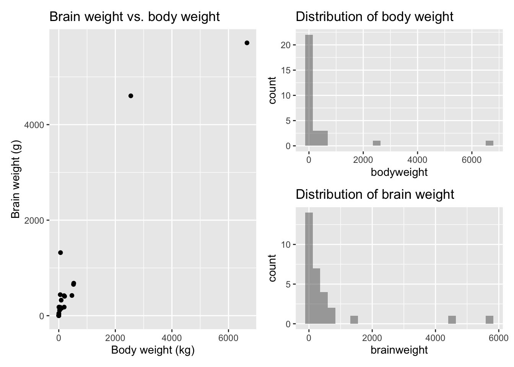
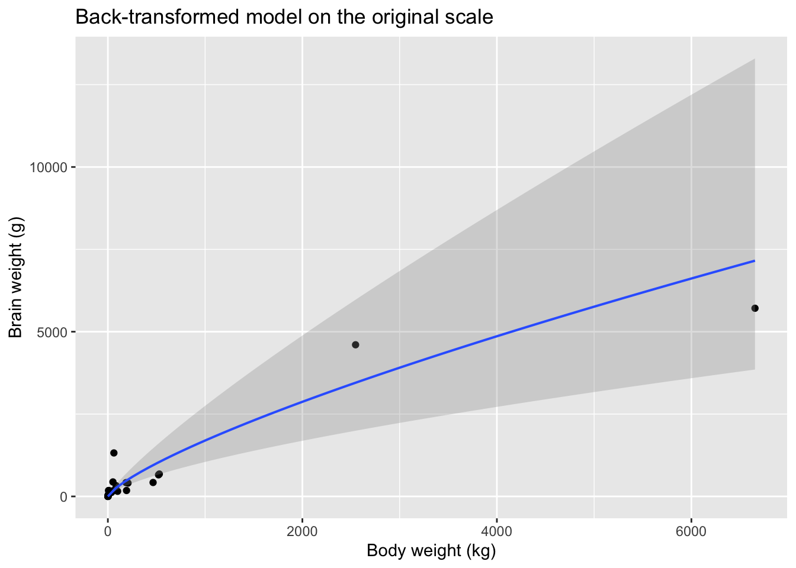

Modeling the relationship between mammal body weight and brain weight
Author
Example prepared by Dr. Luby — Stat230
ImportantBefore you read this
This is an annotated example, not a template to copy sentence-for-sentence. It uses the mammal brain/body weight data from Activity 06 and follows the same three phases as the Case Study 1 prompt (EDA + first model, transform, interpret). The notes in the margins point out why each part works, usually by tying it back to a specific line on the rubric.
Two things are deliberately different from what your real submission should look like:
Code visibility. I’ve left echo: true on here so you can see the R code and the write-up side by side while you’re learning. Your actual Results section should read like a polished narrative with the code hidden (echo: false) — the rubric wants a separate Quarto appendix file with the code, not code embedded in the report itself.
Length. With the margin notes included this renders longer than 3 pages. Imagine the notes aren’t there — the report text itself is close to the page limit you’ll be working with.
Introduction
Why this works: the first two sentences motivate the question before any data appears, and the claim about metabolic cost is backed by a citation rather than asserted as common knowledge. That’s the “avoids broad, unsubstantiated claims” rubric line in action.
Why do some animals have proportionally larger brains than others? Brain tissue is metabolically expensive to build and maintain, so biologists have long been interested in whether brain size simply tracks body size across species, or whether some groups of mammals have evolved brains that are disproportionately large (or small) relative to their body size (Jerison, 1973) [placeholder citation — swap in a source you’ve actually read for your own report]. If brain weight scaled in exact proportion to body weight, we’d expect a 10-kg animal to have roughly ten times the brain mass of a 1-kg animal. Whether that’s true, and by how much real mammals deviate from it, is a natural question to explore with a simple linear regression.
Why this works: this paragraph states the actual research question in plain language before any statistics appear, which is what the rubric means by “explains the questions addressed in the report.”
In this report, we model the relationship between body weight (in kilograms) and brain weight (in grams) using a sample of 30 mammal species, originally compiled by Allison and Cicchetti (1976) for a study of sleep patterns across mammals. Our goal is to describe how brain weight changes as body weight increases, and to see whether that relationship is proportional (doubling body weight doubles brain weight) or not.
species bodyweight brainweight maximumlifespan gestationtime
1 African elephant 6654.000 5712.0 38.6 645
2 Arctic Fox 3.385 44.5 14.0 60
3 Asian elephant 2547.000 4603.0 69.0 624
4 Baboon 10.550 179.5 27.0 180
5 Big brown bat 0.023 0.3 19.0 35
6 Cat 3.300 25.6 28.0 63
totalsleep
1 3.3
2 12.5
3 3.9
4 9.8
5 19.7
6 14.5
Why this works:str_squish() isn’t needed for the two variables we end up using, but a quick look at the raw file (View(weight)) showed inconsistent trailing whitespace in the species names. Cleaning it up costs one line and is good practice even when it doesn’t change your numbers — it’s the kind of small check a careful analyst does automatically.
p1 <-gf_point(brainweight ~ bodyweight, data = weight) |>gf_labs(x ="Body weight (kg)", y ="Brain weight (g)",title ="Brain weight vs. body weight")p2 <-gf_histogram(~ bodyweight, data = weight) |>gf_labs(title ="Distribution of body weight")p3 <-gf_histogram(~ brainweight, data = weight) |>gf_labs(title ="Distribution of brain weight")p1 + (p2 / p3)

Why this works: three plots, one sentence of description each, no restating of what’s visually obvious. The write-up says what it means, not just what it shows.
The scatterplot shows a clear positive association: species with larger bodies tend to have larger brains. But both marginal distributions are strongly right-skewed — most of our 30 species weigh well under 100 kg, with two elephants sitting far out on their own above 2,500 kg. A handful of extreme points sitting alone like this is exactly the situation where a linear model can be misleading, so we fit one anyway, as a baseline to compare against.
weight_lm <-lm(brainweight ~ bodyweight, data = weight)summary(weight_lm)
Call:
lm(formula = brainweight ~ bodyweight, data = weight)
Residuals:
Min 1Q Median 3Q Max
-766.62 -169.87 -127.10 0.85 2017.62
Coefficients:
Estimate Std. Error t value Pr(>|t|)
(Intercept) 170.94214 90.95932 1.879 0.0706 .
bodyweight 0.94795 0.06931 13.678 6.4e-14 ***
---
Signif. codes: 0 '***' 0.001 '**' 0.01 '*' 0.05 '.' 0.1 ' ' 1
Residual standard error: 475.5 on 28 degrees of freedom
Multiple R-squared: 0.8698, Adjusted R-squared: 0.8652
F-statistic: 187.1 on 1 and 28 DF, p-value: 6.403e-14
Why this works: each sentence below names a specific SLR condition (linearity, equal variance, normality) and points to the specific plot feature that supports the claim. Compare that to a vague “the conditions don’t look great” — the rubric calls this “technical language used correctly.”
The fitted model is reported in the output above. Although the slope is highly statistically significant (\(t = 13.68\), \(p < 0.001\)) and \(R^2 = 0.870\) looks encouraging, we don’t trust this model yet. Two things stand out in the diagnostics:
Equal variance is badly violated. The residual-vs-fitted plot fans out dramatically — residuals near zero are tightly packed, while the two elephants produce residuals in the thousands. In fact, the African elephant alone has a leverage value of 0.87, meaning that one observation is doing almost as much work in determining the regression line as the other 29 combined.
Normality is badly violated. The normal probability plot curves sharply away from the reference line at both ends, driven by the same handful of large-bodied, large-residual species (Asian elephant, Man).
Both problems trace back to the same root cause we saw in the EDA: extreme right skew in both variables. A transformation is the natural next step.
Transforming the data
Why this works: the choice of transformation is justified from the EDA, not just tried because the activity suggested it. “Both variables are right-skewed across several orders of magnitude” is a specific, defensible reason to reach for logs rather than, say, a square root.
Because both body weight and brain weight are right-skewed and span several orders of magnitude (from a 10-gram bat to a 6,654-kg elephant), a log-log transformation is a natural choice — it compresses large values much more than small ones, pulling the extreme points back toward the bulk of the data on both axes.
weight_log_lm <-lm(log(brainweight) ~log(bodyweight), data = weight)summary(weight_log_lm)
Call:
lm(formula = log(brainweight) ~ log(bodyweight), data = weight)
Residuals:
Min 1Q Median 3Q Max
-1.7808 -0.5007 -0.1305 0.3515 1.8607
Coefficients:
Estimate Std. Error t value Pr(>|t|)
(Intercept) 2.19038 0.17610 12.44 6.36e-13 ***
log(bodyweight) 0.75943 0.04181 18.16 < 2e-16 ***
---
Signif. codes: 0 '***' 0.001 '**' 0.01 '*' 0.05 '.' 0.1 ' ' 1
Residual standard error: 0.7864 on 28 degrees of freedom
Multiple R-squared: 0.9218, Adjusted R-squared: 0.919
F-statistic: 329.9 on 1 and 28 DF, p-value: < 2.2e-16
Why this works: “reasonably met” is the actual bar, not “perfect.” This paragraph says so explicitly and still names the two points that remain unusual, instead of pretending the model is flawless.
The transformed model is a clear improvement. The residual-vs-fitted plot no longer fans out — spread is roughly constant across the range of fitted values — and the normal probability plot hugs the reference line much more closely, with only mild deviation at the extremes. Leverage is also far more evenly distributed across species (the highest leverage point, the little brown bat, now has leverage of 0.17, compared to 0.87 before). The SLR conditions are reasonably met for this model. Two residuals are still worth a second look — Man, whose brain weight is about 6.4 times what the model predicts, and the water opossum, whose brain weight is only about 17% of what the model predicts — but we’ll return to those in the Discussion rather than treat them as reasons to distrust the model.
Interpretation and conclusions
Why this works: the equation is given in both forms — the one that was actually fit (log-log) and the back-transformed version on the original scale — because the rubric asks for “the equation” and a reader shouldn’t have to do the algebra themselves.
gf_point(brainweight ~ bodyweight, data = weight) |>gf_lm(formula =log(y) ~log(x), backtrans = exp, interval ="confidence") |>gf_labs(x ="Body weight (kg)", y ="Brain weight (g)",title ="Back-transformed model on the original scale")

Why this works: this is the step most reports lose points on. The interpretation doesn’t say “a one-unit increase in log(bodyweight)” — nobody thinks in log-kilograms. It translates the slope back into a statement about the original units, which is what “your interpretation must involve back-transforming” means in practice.
Interpreting the slope. Because both variables are logged, the slope of 0.759 has a percentage interpretation: for every 1% increase in a species’ body weight, we expect its brain weight to increase by about 0.759%, on average. A 95% confidence interval for the true slope is (0.674, 0.845) — notably, this entire interval is below 1, giving strong evidence that brain weight scales sub-proportionally with body weight across mammals. In concrete terms, when body weight doubles, predicted brain weight is multiplied by \(2^{0.759} \approx 1.69\) — a 69% increase, not a 100% increase. Bigger-bodied mammals tend to have relatively smaller brains for their size, not larger ones.
Interpreting the intercept. The back-transformed intercept, \(e^{2.190} \approx 8.94\) grams, is the model’s predicted brain weight for a 1-kg mammal (since \(\log(1) = 0\)). A 95% confidence interval for the slope on the log scale was given above; for the intercept it is (1.830, 2.551) on the log scale, or roughly (6.2 g, 12.8 g) back-transformed. Unlike many regression examples, this intercept is not an extrapolation — our smallest species (a 10-gram bat) and largest (a 6,654-kg elephant) comfortably bracket a 1-kg animal, so this is a legitimate, interpretable prediction rather than a nonsensical one.
Overall conclusion. Body weight is a strong predictor of brain weight across mammal species: the log-log model explains about 92% of the variability in log brain weight (\(R^2 = 0.922\)), compared to 87% for the untransformed model, and does so while actually satisfying the SLR conditions. The relationship follows a power law with exponent well below 1, meaning mammalian brains do not scale in direct proportion to body size — larger animals get relatively less brain per kilogram of body, not more.
Discussion
Why this works: no new numbers appear in this section — everything here was already established in Results. That’s what “no new results should appear here” means: Discussion synthesizes, it doesn’t analyze.
Across 30 mammal species, body weight and brain weight are strongly associated, but not in direct proportion: our model estimates that brain weight grows at roughly the 0.76 power of body weight, so larger mammals carry relatively less brain mass per kilogram than smaller ones. This is consistent with the idea that brain tissue is metabolically costly, and that body size and brain size are shaped by somewhat different evolutionary pressures.
Why this works: limitations here are specific to this dataset and this model, not a generic disclaimer like “our sample size was small.” Compare “species-level averages hide within-species variation” to a vague “there could be errors in the data.”
A few limitations are worth noting. First, this is a cross-species regression on species-level averages, not individual animals — it describes how typical brain weight varies across species, not how an individual animal’s brain weight relates to its own body weight. Second, the two species with the largest residuals in our final model, Man and the water opossum, aren’t random noise: humans and other primates are well known in the comparative-anatomy literature to sit above the general mammalian scaling line, while marsupials like the water opossum tend to sit below it. That pattern suggests our model is missing a systematic factor — something like taxonomic group (primate vs. non-primate, placental vs. marsupial) — that a multiple regression model could incorporate. Third, with only 30 species sampled from roughly 6,000 living mammal species, we should be cautious about how far these conclusions generalize, particularly to groups (like bats or cetaceans) that are thinly represented in this sample.
A natural follow-up question: does adding taxonomic group as a second predictor explain away the Man and water-opossum residuals, or is there still meaningful species-to-species variation in brain size left over even after accounting for both body size and broad taxonomic group?
References
Allison, T., & Cicchetti, D. V. (1976). Sleep in mammals: Ecological and constitutional correlates. Science, 194(4266), 732–734.
Jerison, H. J. (1973). Evolution of the brain and intelligence. Academic Press. [placeholder citation — for your own report, find and read a real peer-reviewed source and cite it properly]
Why this works: the Allison & Cicchetti citation is real — it’s the actual source of this dataset, so it belongs here regardless of which prompt you’re working from. The Jerison entry is a deliberate placeholder for the background-research citation the rubric requires; yours needs to be a source you actually read, not one I handed you.